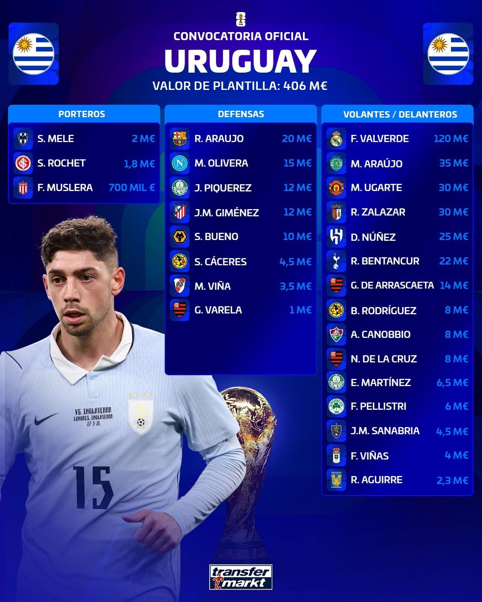
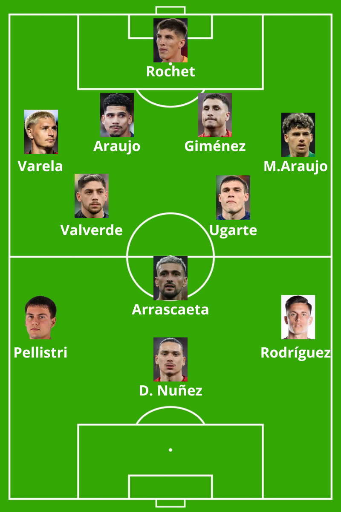

Estructura: 1-4-2-3-1

Uruguay, por las características de su plantilla y el perfil de sus principales futbolistas, será una selección orientada principalmente hacia el juego de transiciones. Se siente más cómoda en escenarios dinámicos, de ida y vuelta, donde pueda explotar la agresividad de sus recuperaciones y la verticalidad de sus ataques antes que en contextos de posesiones largas y elaboradas.
Como ocurre habitualmente en los equipos dirigidos por Marcelo Bielsa, la presión será una herramienta fundamental dentro de su modelo de juego. Dependiendo del contexto del partido, Uruguay elevará considerablemente la intensidad de su presión para provocar errores rivales en zonas adelantadas y generar situaciones de transición ofensiva. Desde su llegada al banquillo celeste, Bielsa ha tratado de implantar este estilo con el objetivo de potenciar las virtudes de una generación de futbolistas que destaca más por su intensidad, despliegue físico y capacidad para atacar espacios que por un perfil eminentemente asociativo o controlador del juego.
En este contexto, Giorgian De Arrascaeta será una pieza diferencial. Dentro de la selección uruguaya es probablemente el futbolista que mejor interpreta los espacios intermedios y las zonas de tres cuartos de campo. Su capacidad para recibir entre líneas, acelerar jugadas y conectar con los atacantes le convierte en un jugador clave para dar continuidad y sentido a las transiciones ofensivas, principal recurso competitivo del equipo de Bielsa.
A nivel defensivo, gran parte de la solidez del equipo recaerá sobre Ronald Araújo y José María Giménez. Sobre el papel forman una de las parejas de centrales con mayor potencial del torneo por condiciones físicas, liderazgo y capacidad defensiva. Sin embargo, ambos llegan con la necesidad de reivindicarse tras temporadas recientes marcadas por problemas físicos, irregularidad competitiva y algunos errores que han condicionado su rendimiento. Su estado de forma será determinante para las aspiraciones de Uruguay.
Bielsa afrontará además un desafío que va más allá del plano puramente táctico. Su metodología, caracterizada por una enorme exigencia y una idea de juego muy definida y poco negociable, ha generado tensiones tanto dentro como fuera del entorno de la selección. Las críticas, los rumores sobre su continuidad y las discrepancias surgidas en determinados momentos han incrementado la presión sobre el seleccionador argentino. Gestionar ese contexto y mantener al grupo alineado con su propuesta será uno de los factores clave para que Uruguay pueda competir al máximo nivel durante el torneo.